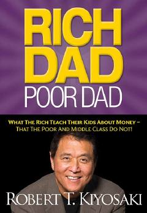

RDBoylar pul haqida nima biladi — bu kitob o'sha sirni ochadi.
Robert T. Kiyosaki tomonidan yozilgan bu kitob boylar o'z farzandlariga pul haqida nima o'rgatishini, kambag'al va o'rta sinf esa nima o'rgatmasligini tushuntiradi. Kitob moliyaviy mustaqillikka erishish, aktiv va passiv daromad farqini anglash hamda to'g'ri investitsiya qilish haqida amaliy bilimlar beradi.